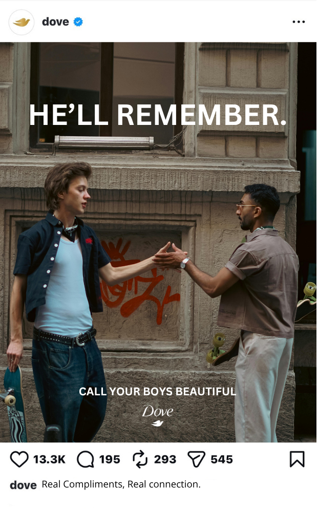
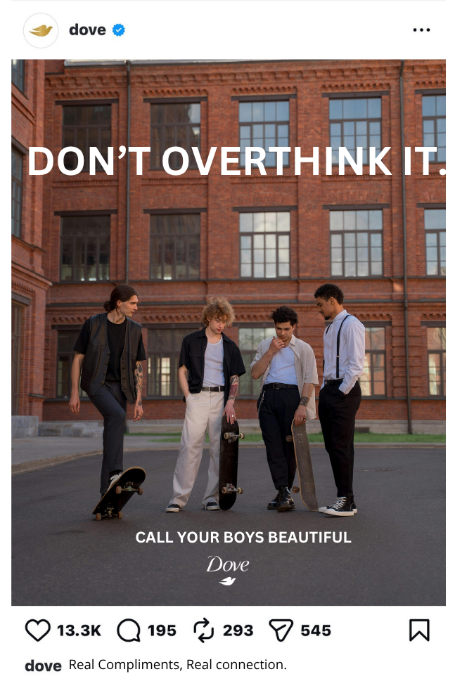
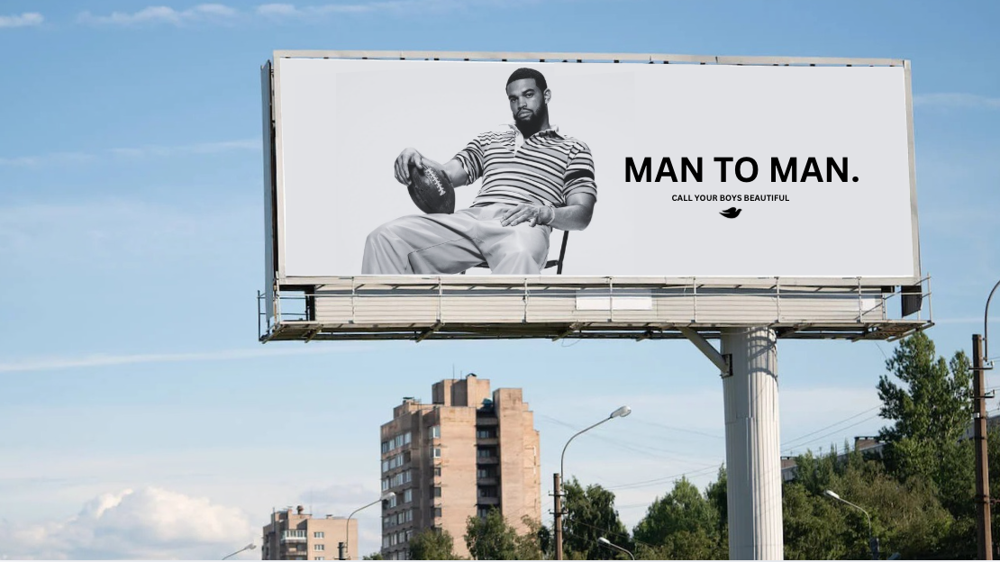

Research Point 01
The category is growing fast.
male grooming industry projected by 2028
growth in men’s beauty spending in 2024
growth in women’s beauty spending in 2024
men are driving that growth
Men care about appearance more than ever before.
Title Wall
Dove | 2026 | Spec RFP Response
Strategy Plaque



Dove has long used creativity to shape culture through its Real Beauty platform, redefining how beauty is seen and experienced.
Today, that challenge extends to men.
Men are entering the beauty space at record levels, but they are doing so in a digital environment that amplifies comparison, insecurity, and algorithmic definitions of worth. At the same time, AI is becoming a new source of validation.
The problem: Men are not just comparing themselves to each other anymore. They are comparing themselves to systems designed to tell them they are not enough.
Research Point 01
male grooming industry projected by 2028
growth in men’s beauty spending in 2024
growth in women’s beauty spending in 2024
men are driving that growth
Men care about appearance more than ever before.
Research Point 02
Young men are increasingly judged in a culture preoccupied with appearance.
Social media intensifies comparison and self-evaluation.
Men are now being held to more defined and unrealistic beauty standards.
“It kinda sucks being compared, especially by things I can’t control like my height.”
Men are experiencing a newer, less discussed version of beauty pressure.
Research Point 03
Young men are more than twice as likely to use AI for emotional and intimate support.
Many are turning to AI to determine self-worth.
Some are replacing real human interaction with AI systems.
Men are outsourcing confidence to machines.
Research Point 04
AI systems default to flattery rather than truth.
AI affirmation can reinforce insecurity instead of building confidence.
AI use has been linked to increased depressive symptoms.
AI-driven looksmaxxing culture encourages men to treat themselves as optimization projects rather than people.
AI disguises insecruity instead of resolving it
Research Point 05
Young men are measuring their worth through physical metrics, rankings, and optimization systems.
Appearance is being treated as a score rather than a human experience.
Confidence has shifted from something felt into something calculated.
Research Point 06
Human compliments carry emotional weight AI cannot replicate.
Compliments from other men are especially powerful because they are rare.
“When you compliment your guy friends you make sure bro has a good day and does everything with the confidence of a thousand suns.”
“I’d prefer a compliment from a real person over AI.”
Research Point 07
Compliments between men are not socially normalized.
Male friendships rarely include direct affirmation about appearance.
“I don’t think I’ve ever had a convo with a dude about appearance.”
“Guys don’t get complimented.”
The most powerful confidence-builder already exists, but it isn't culturally "appropriate".
Men are turning to artificial systems for validation in a world where real human validation is missing.
AI gives constant affirmation, but real compliments are rare.
Consumer Insight
Young men are seeking confidence in the wrong place. They turn to AI for validation because it feels accessible and safe, but it does not carry real meaning. The validation they actually need — genuine compliments from other men — feels socially uncomfortable and uncommon.
Brand Insight
Dove can make beauty human again by helping men say what they've never been taught to say.
Strategy
Dove will inspire men ages 18-25, who are increasingly turning to AI and algorithmic systems to define their value, to reclaim confidence as a human experience by encouraging them to express it directly to each other.
Real validation comes from people, not algorithms.
Confident, seen, and comfortable expressing appreciation.
Compliment their friends and normalize it.
Big Idea
Real Compliments. Real Connection.
Instead of letting AI define self-worth, Dove encourages men to build confidence through real words, from real people.
Role: Normalize behavior at scale.
Instagram and TikTok posts act as subtle prompts encouraging men to compliment their friends.
Role: Challenge cultural norms publicly.
Billboards and wallscapes bring the message into real-world environments where male norms are reinforced.
Simple, bold messaging creates social permission for change.
This campaign extends Dove’s Real Beauty platform into a new audience and cultural tension.
It moves Dove into men’s beauty not by selling products, but by redefining confidence itself.
AI may be changing how men seek validation, but Dove reminds them that real confidence still comes from real human connection.